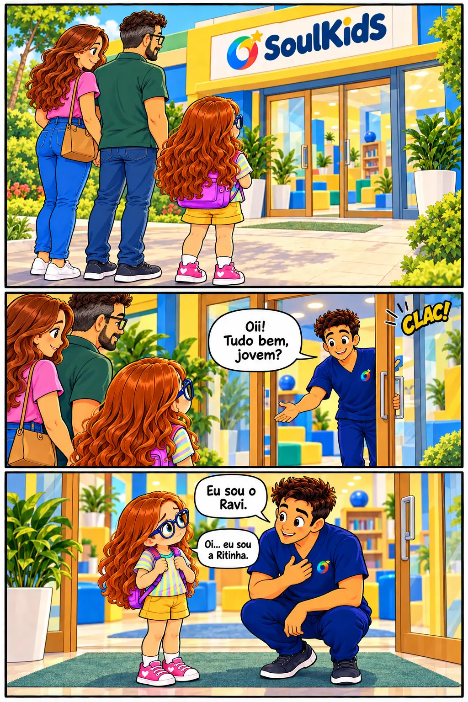

Detetives das emoções
Observe a situação, perceba pistas no corpo e no comportamento e escolha o que pode ajudar. As alternativas mudam de lugar a cada partida.
Emoções • empatia • autorregulação
Atividade educativa. O resultado não constitui avaliação psicológica ou diagnóstico.
Situação 1 de 10
Qual emoção combina mais com essas pistas?
Agora pense: o que pode ajudar?
Escolha uma atitude acolhedora para esta situação.
Você observou as emoções!
Nem todas as pessoas sentem a mesma coisa na mesma situação. Observar, perguntar e acolher ajuda a compreender melhor o outro.
Este jogo trabalha reconhecimento emocional e não realiza diagnóstico.